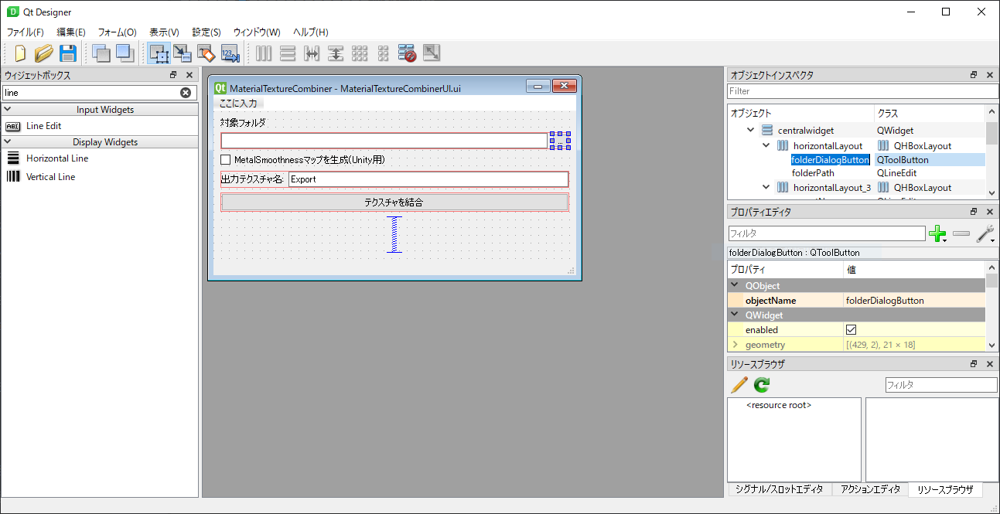

Pythonツール制作
PySide2セットアップ
インストール
1 | pip install pyside2
|
パスを通す
1 | C:\Users\ユーザー名\AppData\Local\Programs\Python\Python37\Scripts
|
QtDesignerでUIを作る
PySide2をインストールすると、USERNAME\AppData\Local\Programs\Python\Python37\Lib\site-packages\PySide2にdesigner.exeがあるのでそれを起動。
ウィジェットボックスからUIパーツを配置する。オブジェクトインスペクタから名前や属性を編集。

UIファイルをPythonファイルに変換
PySide2ではUIファイルのままでも読み込めるが、後々EXEファイル化するときに1ファイル化できなくなるので、pythonファイルに変換する
1 | pyside2-uic.exe XXXXX.ui -o XXXXX.py
|
EXE化する
pyinstallerを使用する。
1 | pip install pyinstaller
|
XXXXXX.py をexe化する。
1 | pyinstaller XXXXXX.py --onefile --noconsole
|
distフォルダの中にexeがある。
venv使って仮想環境をつくる
プロジェクトのディレクトリ直下で
1 | py -m venv venv
|
を実行するとプロジェクトファイルにvenvフォルダができる。
venv環境のアクティベート
1 | .\venv\Scripts\activate
|
パッケージのインストール
アクティベート状態でpipを使ってインストールする。
pyinstallerは重いしファイルがデカい
py2exeをつかう。ただしPython3.4までしか対応していない。
Python3.5 -3.7まで対応している物がありました。
今回はpython3.7.1で使うので、Releaseからpy2exe-0.9.3.2-cp37-none-win_amd64.whlをダウンロード
pipでインストール
1 | pip install py2exe-0.9.3.2-cp37-none-win_amd64.whl
|
py2exeでEXEが作れたが、起動しない。
1 2 3 4 5 6 7 8 9 10 | PySide2/__init__.py: Unable to import shiboken2 from D:\kurotori\Documents\PySideTools\MaterialTextureCombiner\dist\library.zip Traceback (most recent call last): File "MaterialTextureCombiner.py", line 5, in <module> File "MaterialTextureCombinerUI.pyc", line 11, in <module> File "PySide2\__init__.pyc", line 88, in <module> File "PySide2\__init__.pyc", line 54, in _setupQtDirectories File "shiboken2\__init__.pyc", line 27, in <module> File "<loader>", line 10, in <module> File "<loader>", line 8, in __load ImportError: (DLL load failed: 指定されたモジュールが見つかりません。) 'D:\\kurotori\\Documents\\PySideTools\\MaterialTextureCombiner\\dist\\shiboken2.shiboken2.pyd' |
shiboken2がインポート出来ないようだが、解決方法がわからず断念。